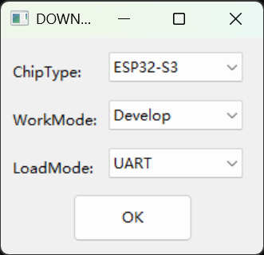
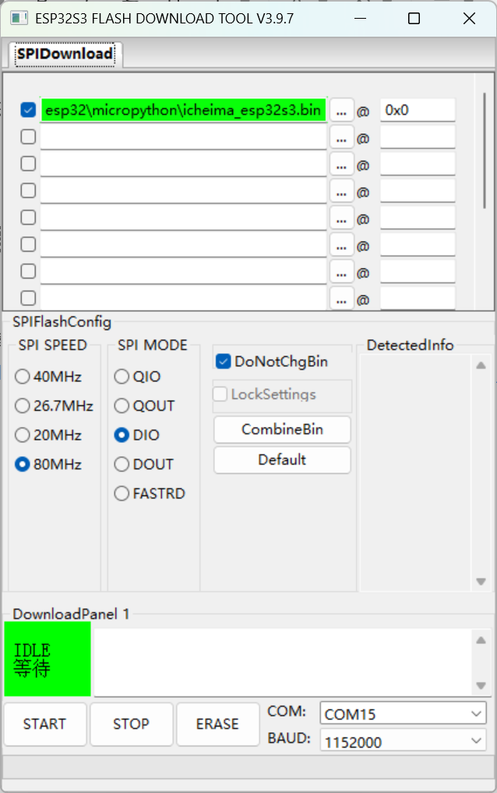
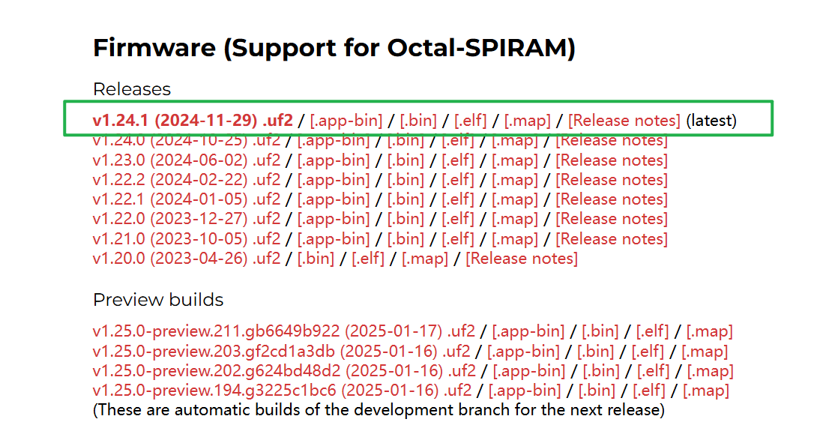
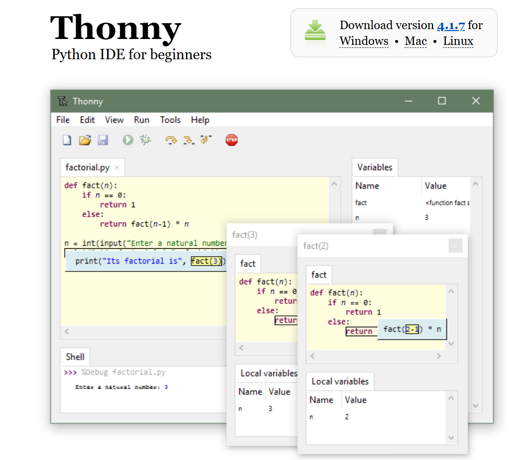
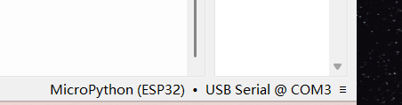
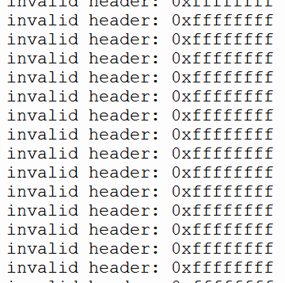
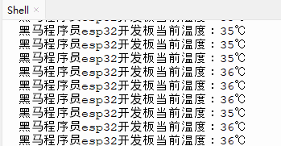

<!DOCTYPE lake>
<p data-lake-id="ub3b97038" id="ub3b97038"><br/></p><h2 data-lake-id="Y1tQK" id="Y1tQK"><span data-lake-id="u6d2506fb" id="u6d2506fb" style="color: rgb(64, 64, 64)">MicroPython 简介</span></h2><p data-lake-id="u2ef7d0ef" id="u2ef7d0ef"><span class="lake-fontsize-12" data-lake-id="u5ee01f8b" id="u5ee01f8b" style="color: rgb(64, 64, 64)">MicroPython 是 Python 3 编程语言的一个精简实现，专为微控制器和嵌入式系统设计。由 Damien George 于 2013 年发起，目标是在资源有限的硬件上提供高效的 Python 环境。</span></p><h3 data-lake-id="d0cb8ff5" id="d0cb8ff5"><span data-lake-id="u2b190367" id="u2b190367" style="color: rgb(64, 64, 64)">主要特点</span></h3><ol list="uab641b41"><li data-lake-id="ude952b28" fid="ucbae093d" id="ude952b28"><strong><span class="lake-fontsize-12" data-lake-id="u3e9681eb" id="u3e9681eb" style="color: rgb(64, 64, 64)">轻量级</span></strong><span class="lake-fontsize-12" data-lake-id="u582395ef" id="u582395ef" style="color: rgb(64, 64, 64)">：适用于 RAM 和存储有限的设备。</span></li><li data-lake-id="u6abb9af7" fid="ucbae093d" id="u6abb9af7"><strong><span class="lake-fontsize-12" data-lake-id="u0a518c55" id="u0a518c55" style="color: rgb(64, 64, 64)">兼容 Python 3</span></strong><span class="lake-fontsize-12" data-lake-id="u463d5f39" id="u463d5f39" style="color: rgb(64, 64, 64)">：支持大部分 Python 3 语法和核心库。</span></li><li data-lake-id="ud21f0c14" fid="ucbae093d" id="ud21f0c14"><strong><span class="lake-fontsize-12" data-lake-id="u96246c32" id="u96246c32" style="color: rgb(64, 64, 64)">硬件访问</span></strong><span class="lake-fontsize-12" data-lake-id="u80c27513" id="u80c27513" style="color: rgb(64, 64, 64)">：提供直接控制 GPIO、I2C、SPI、UART 等硬件接口的 API。</span></li><li data-lake-id="u5551aa4d" fid="ucbae093d" id="u5551aa4d"><strong><span class="lake-fontsize-12" data-lake-id="ufb8ff446" id="ufb8ff446" style="color: rgb(64, 64, 64)">交互式解释器</span></strong><span class="lake-fontsize-12" data-lake-id="u08b87b00" id="u08b87b00" style="color: rgb(64, 64, 64)">：支持 REPL（Read-Eval-Print Loop），便于实时调试。</span></li><li data-lake-id="u63be57bc" fid="ucbae093d" id="u63be57bc"><strong><span class="lake-fontsize-12" data-lake-id="ub9d07f28" id="ub9d07f28" style="color: rgb(64, 64, 64)">丰富的库</span></strong><span class="lake-fontsize-12" data-lake-id="uebb04274" id="uebb04274" style="color: rgb(64, 64, 64)">：包含多种内置库，并支持扩展。</span></li></ol><h3 data-lake-id="3dbf0c11" id="3dbf0c11"><span data-lake-id="u45d39512" id="u45d39512" style="color: rgb(64, 64, 64)">应用场景</span></h3><ul list="u9340ad6a"><li data-lake-id="u2dbc9f6e" fid="ufadd65a2" id="u2dbc9f6e"><strong><span class="lake-fontsize-12" data-lake-id="u6a6f421e" id="u6a6f421e" style="color: rgb(64, 64, 64)">物联网设备</span></strong><span class="lake-fontsize-12" data-lake-id="ud8e0e408" id="ud8e0e408" style="color: rgb(64, 64, 64)">：如传感器、智能家居设备。</span></li><li data-lake-id="ude7202fa" fid="ufadd65a2" id="ude7202fa"><strong><span class="lake-fontsize-12" data-lake-id="ua742159b" id="ua742159b" style="color: rgb(64, 64, 64)">教育</span></strong><span class="lake-fontsize-12" data-lake-id="u0e0b34b1" id="u0e0b34b1" style="color: rgb(64, 64, 64)">：适合初学者学习编程和硬件交互。</span></li><li data-lake-id="u3577571b" fid="ufadd65a2" id="u3577571b"><strong><span class="lake-fontsize-12" data-lake-id="ubdf3e5c4" id="ubdf3e5c4" style="color: rgb(64, 64, 64)">快速原型开发</span></strong><span class="lake-fontsize-12" data-lake-id="uf405e282" id="uf405e282" style="color: rgb(64, 64, 64)">：简化嵌入式系统的开发流程。</span></li></ul><p data-lake-id="ub4c773e0" id="ub4c773e0"><span class="lake-fontsize-12" data-lake-id="u80d26aa9" id="u80d26aa9" style="color: rgb(64, 64, 64)">​</span><br/></p><h3 data-lake-id="25f9c7fa" id="25f9c7fa"><span data-lake-id="ufd0f45bc" id="ufd0f45bc" style="color: rgb(var(--ds-rgb-label-1))">总结</span></h3><p data-lake-id="u65417e2d" id="u65417e2d"><span data-lake-id="u21a189e4" id="u21a189e4" style="color: rgb(var(--ds-rgb-label-1))">MicroPython 为嵌入式开发提供了高效、易用的 Python 环境，适合快速开发和原型设计，尤其适合资源有限的硬件平台。</span></p><p data-lake-id="u25424046" id="u25424046"><span class="lake-fontsize-11" data-lake-id="u58f6593b" id="u58f6593b" style="color: rgb(77, 107, 254); background-color: rgb(var(--ds-rgb-blue-100))">​</span><br/></p><h2 data-lake-id="WwV12" id="WwV12"><span data-lake-id="udabfad25" id="udabfad25" style="color: rgb(64, 64, 64)">MicroPython环境搭建</span></h2><h3 data-lake-id="WIGpB" id="WIGpB"><span data-lake-id="uc4e623fd" id="uc4e623fd">flashdownload工具</span></h3><p data-lake-id="u3c3ef639" id="u3c3ef639"><span class="lake-fontsize-11" data-lake-id="u17a04529" id="u17a04529">这个工具是用来将代码烧录到芯片中的，一般由芯片原厂提供</span></p><p data-lake-id="u027b96e3" id="u027b96e3"><br/></p><p data-lake-id="uf2d92daa" id="uf2d92daa"><span class="lake-fontsize-11" data-lake-id="ufc5eef9e" id="ufc5eef9e">单击下面得链接下载esp32固件下载工具</span></p><p data-lake-id="ubfed9ae6" id="ubfed9ae6"><a data-lake-id="u75a25b46" href="https://www.espressif.com.cn/zh-hans/support/download/other-tools?keys=&amp;field_type_tid%5B%5D=842" id="u75a25b46" rel="noopener noreferrer" target="_blank"><span data-lake-id="u36972a09" id="u36972a09">https://www.espressif.com.cn/zh-hans/support/download/other-tools?keys=&amp;field_type_tid%5B%5D=842</span></a></p><p data-lake-id="u29878556" id="u29878556"><span data-lake-id="u0506f622" id="u0506f622">​</span><br/></p><p data-lake-id="uc15f6a3f" id="uc15f6a3f"><span class="lake-fontsize-11" data-lake-id="u1b220391" id="u1b220391">下载固件：</span><a class="yuque-card-link" href="../../_assets/df7244d0fbf369f824ae3f17.7z">icheima_lvgl.7z</a></p><p data-lake-id="u1f535bc4" id="u1f535bc4"><span data-lake-id="u21662e0c" id="u21662e0c">​</span><br/></p><p data-lake-id="ua2f54626" id="ua2f54626"><span data-lake-id="u67c2c9cb" id="u67c2c9cb">弹出下面这个框之后，选择esp32s3芯片</span></p><p data-lake-id="ua9f9e38c" id="ua9f9e38c" style="text-align: center"></p><p data-lake-id="uc040dced" id="uc040dced"><span data-lake-id="u22e470c2" id="u22e470c2">在下面这个框这里，选择我们要下载的固件，固件下载在下一个小结</span></p><p data-lake-id="u659506d0" id="u659506d0" style="text-align: center"></p><h3 data-lake-id="Iw51H" id="Iw51H"><span data-lake-id="uc3173273" id="uc3173273">固件下载</span></h3><p data-lake-id="u4f1f6e75" id="u4f1f6e75"><span data-lake-id="u8fe80e8d" id="u8fe80e8d">我们可以从micropython官网下载已经编译好的固件，它里面包含了基础功能，我们下载这个固件到开发板中，就可以驱动我们的硬件外设</span></p><p data-lake-id="u889fc878" id="u889fc878"><span data-lake-id="ubb7c6f49" id="ubb7c6f49">​</span><br/></p><p data-lake-id="u3f7f5208" id="u3f7f5208"><span data-lake-id="u7c4dd352" id="u7c4dd352">参考文档：</span></p><p data-lake-id="u9745f4e4" id="u9745f4e4"><span data-lake-id="ucbcd2102" id="ucbcd2102">​</span><br/></p><p data-lake-id="ua7956fa5" id="ua7956fa5"><span data-lake-id="u2e30abe9" id="u2e30abe9">ESP32S3: </span><a data-lake-id="ufec7cc36" href="https://micropython.org/download/ESP32_GENERIC_S3/" id="ufec7cc36" rel="noopener noreferrer" target="_blank"><span data-lake-id="u390f479c" id="u390f479c">https://micropython.org/download/ESP32_GENERIC_S3/</span></a></p><p data-lake-id="uc047a199" id="uc047a199"><span data-lake-id="ue3d7fa15" id="ue3d7fa15">ESP32C3: </span><a data-lake-id="ue23846a8" href="https://micropython.org/download/ESP32_GENERIC_C3/" id="ue23846a8" rel="noopener noreferrer" target="_blank"><span data-lake-id="u37dcd2c2" id="u37dcd2c2">https://micropython.org/download/ESP32_GENERIC_C3/</span></a></p><p data-lake-id="u40b5e498" id="u40b5e498"><span data-lake-id="udc6cfadb" id="udc6cfadb">​</span><br/></p><p data-lake-id="u5ae6da83" id="u5ae6da83"><span data-lake-id="u72d79a89" id="u72d79a89">下载一个不那么新的固件，相对来说会稳定一些。</span></p><p data-lake-id="u60aea03b" id="u60aea03b"></p><p data-lake-id="u7f28ea2b" id="u7f28ea2b"><span data-lake-id="udeb7bd2f" id="udeb7bd2f">​</span><br/></p><p data-lake-id="u38166835" id="u38166835"><br/></p><h2 data-lake-id="qoGC3" id="qoGC3"><span data-lake-id="u67ff9d66" id="u67ff9d66">安装Thonny编辑软件</span></h2><p data-lake-id="ub6e21f63" id="ub6e21f63"><span data-lake-id="uc02266b1" id="uc02266b1">参考文档： </span><a data-lake-id="ueddf6e02" href="https://thonny.org/" id="ueddf6e02" rel="noopener noreferrer" target="_blank"><span data-lake-id="ua65cbc41" id="ua65cbc41">https://thonny.org/</span></a></p><p data-lake-id="u738d0636" id="u738d0636"><span data-lake-id="u6e9ad339" id="u6e9ad339">这是一个用于编写micropython代码的工具，类似我们之前所使用的Vscode,keil,codeblockS等编辑器，下载和使用它都是比较容易的</span></p><p data-lake-id="uede7f73a" id="uede7f73a" style="text-align: center"></p><p data-lake-id="ue2ba81cf" id="ue2ba81cf" style="text-align: center"><strong><span data-lake-id="u1206a456" id="u1206a456">在软件的右下角一定要记得选择当前开发板串口</span></strong></p><p data-lake-id="ue64ea162" id="ue64ea162" style="text-align: center"><strong><span data-lake-id="u17a01018" id="u17a01018">在软件的右下角一定要记得选择当前开发板串口</span></strong></p><p data-lake-id="u69313147" id="u69313147" style="text-align: center"><strong><span data-lake-id="uce128868" id="uce128868">在软件的右下角一定要记得选择当前开发板串口</span></strong></p><p data-lake-id="ub1593d3b" id="ub1593d3b" style="text-align: center"></p><h3 data-lake-id="o9NTF" id="o9NTF"><span data-lake-id="u7ef3c07b" id="u7ef3c07b">示例代码</span></h3><span class="yuque-card-unsupported">[codeblock]</span><h3 data-lake-id="KNKDd" id="KNKDd"><span data-lake-id="u84d8f124" id="u84d8f124">报错及解决</span></h3><p data-lake-id="uce9905b9" id="uce9905b9"><span data-lake-id="u38155608" id="u38155608">如果控制台报错如下</span></p><span class="yuque-card-unsupported">[codeblock]</span><p data-lake-id="u467a299b" id="u467a299b"><span data-lake-id="u59a3d142" id="u59a3d142">则要在flash download下载固件之前，先进行ERASE擦除，再重新START烧录</span></p><p data-lake-id="ucda88dc9" id="ucda88dc9"><span data-lake-id="uf63bca4d" id="uf63bca4d">​</span><br/></p><p data-lake-id="u8e311e35" id="u8e311e35"><span data-lake-id="u039b1419" id="u039b1419">如果没有烧录固件，直接连接了开发板，会报如下错误</span></p><p data-lake-id="u5105aa34" id="u5105aa34" style="text-align: center"></p><p data-lake-id="u4d51ed07" id="u4d51ed07"><br/></p><h2 data-lake-id="kcuiO" id="kcuiO"><span data-lake-id="u571222bf" id="u571222bf">实操验证</span></h2><p data-lake-id="u15eb383e" id="u15eb383e"><span data-lake-id="uee7d7641" id="uee7d7641">该文档中包含有大量的例程，是我们micropython学习的主要内容</span></p><p data-lake-id="u62978966" id="u62978966"><span data-lake-id="ue4b3bd9b" id="ue4b3bd9b">参考文档：</span></p><p data-lake-id="ud98e3bfe" id="ud98e3bfe"><a data-lake-id="u2eb9e84f" href="https://docs.micropython.org/en/v1.23.0/library/index.html" id="u2eb9e84f" rel="noopener noreferrer" target="_blank"><span data-lake-id="uf5e89934" id="uf5e89934">https://docs.micropython.org/en/v1.23.0/library/index.html</span></a></p><p data-lake-id="ub37e5b61" id="ub37e5b61"><a data-lake-id="u74e3ebb4" href="https://docs.micropython.org/en/latest/esp32/quickref.html" id="u74e3ebb4" rel="noopener noreferrer" target="_blank"><span data-lake-id="uf203bf9b" id="uf203bf9b">https://docs.micropython.org/en/latest/esp32/quickref.html</span></a></p><p data-lake-id="u2148e1d7" id="u2148e1d7"><br/></p><h3 data-lake-id="S9iCu" id="S9iCu"><span data-lake-id="u61ce9dde" id="u61ce9dde">读取内部温度</span></h3><a class="yuque-card-link" href="https://player.bilibili.com/player.html?bvid=BV1choKYKEb4&amp;autoplay=0" rel="noopener noreferrer" target="_blank">thirdparty：thirdparty</a><ol list="u0861b776"><li data-lake-id="u40b9c333" fid="u921d2402" id="u40b9c333"><span data-lake-id="ud4b9449d" id="ud4b9449d">先导入头文件</span></li></ol><span class="yuque-card-unsupported">[codeblock]</span><ol list="uc61e667c" start="2"><li data-lake-id="ud5a83b25" fid="u334f48f6" id="ud5a83b25"><span data-lake-id="ub152b9d8" id="ub152b9d8">读取mcu当前温度</span></li></ol><span class="yuque-card-unsupported">[codeblock]</span><p data-lake-id="u3e6f7630" id="u3e6f7630"></p><p data-lake-id="u35df8a8c" id="u35df8a8c"><br/></p><p data-lake-id="u7329ea99" id="u7329ea99"><span data-lake-id="u8a889852" id="u8a889852">总结，通过上述代码的运行，我们验证了python代码运行到芯片中的整个过程，也就验证了我们整个开发环境是没有问题的。我们发现其实只要掌握了我们前面课程所学的基础，换一个语言，换一个编程工具，其实都是相通的。</span></p><p data-lake-id="u3150d355" id="u3150d355"><br/></p><p data-lake-id="u6ef0f0d3" id="u6ef0f0d3"><br/></p><p data-lake-id="u3013ced6" id="u3013ced6"><span data-lake-id="uaab46c94" id="uaab46c94">开发板原理图</span></p><a class="yuque-card-link" href="https://www.yuque.com/attachments/yuque/0/2025/pdf/27903758/1742188818904-c9e50755-fdad-4090-89e5-99930d1f543c.pdf">localdoc：SCH_Schematic1_1_2025-03-17.pdf</a><p data-lake-id="ua1092c17" id="ua1092c17"><span data-lake-id="ud5c84bad" id="ud5c84bad">​</span><br/></p><span class="yuque-card-unsupported">[codeblock]</span><h2 data-lake-id="GcZIS" id="GcZIS"><span data-lake-id="u2d5d57a0" id="u2d5d57a0">VSCode配置</span></h2><ul list="u884a868c"><li data-lake-id="u08be1ddd" fid="uc7189456" id="u08be1ddd"><span data-lake-id="uec2150f8" id="uec2150f8">插件 </span><code data-lake-id="u80f09d4e" id="u80f09d4e"><span data-lake-id="u00ff1908" id="u00ff1908">Pymakr</span></code></li><li data-lake-id="u0fff27fa" fid="uc7189456" id="u0fff27fa"><span data-lake-id="u19f8846a" id="u19f8846a">代码提示 </span><code data-lake-id="u24d0a1f4" id="u24d0a1f4"><span data-lake-id="u2a4de2be" id="u2a4de2be">pip install micropython-esp32-stubs</span></code></li></ul>